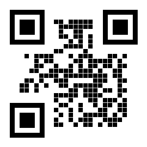

Tbilisi, Georgia
Нужна помощь

Любая сумма поможет оплатить предстоящую чистку зубов под седацией, УЗИ и необходимые медикаменты.
Перевести в Bank of GeorgiaВ ближайшее время я планирую проводить небольшие акустические выступления (играю на гитаре и пою) на улицах и площадках Тбилиси в поддержку сбора средств для Котика. Следите за обновлениями и новыми фото/видео на этой странице!